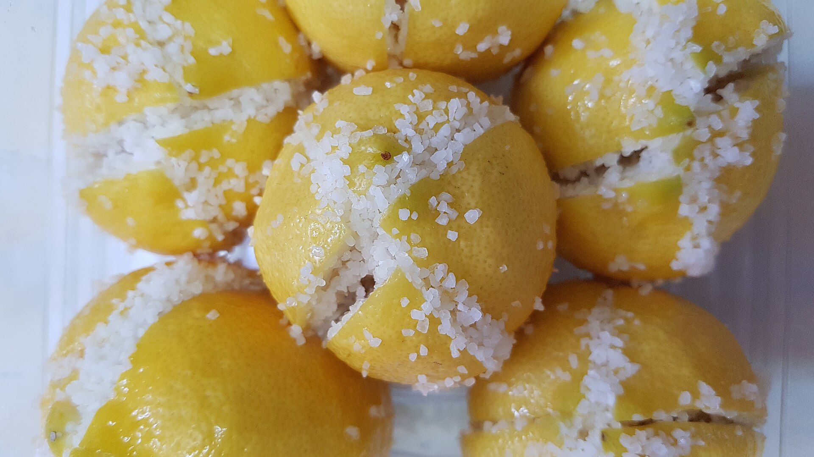
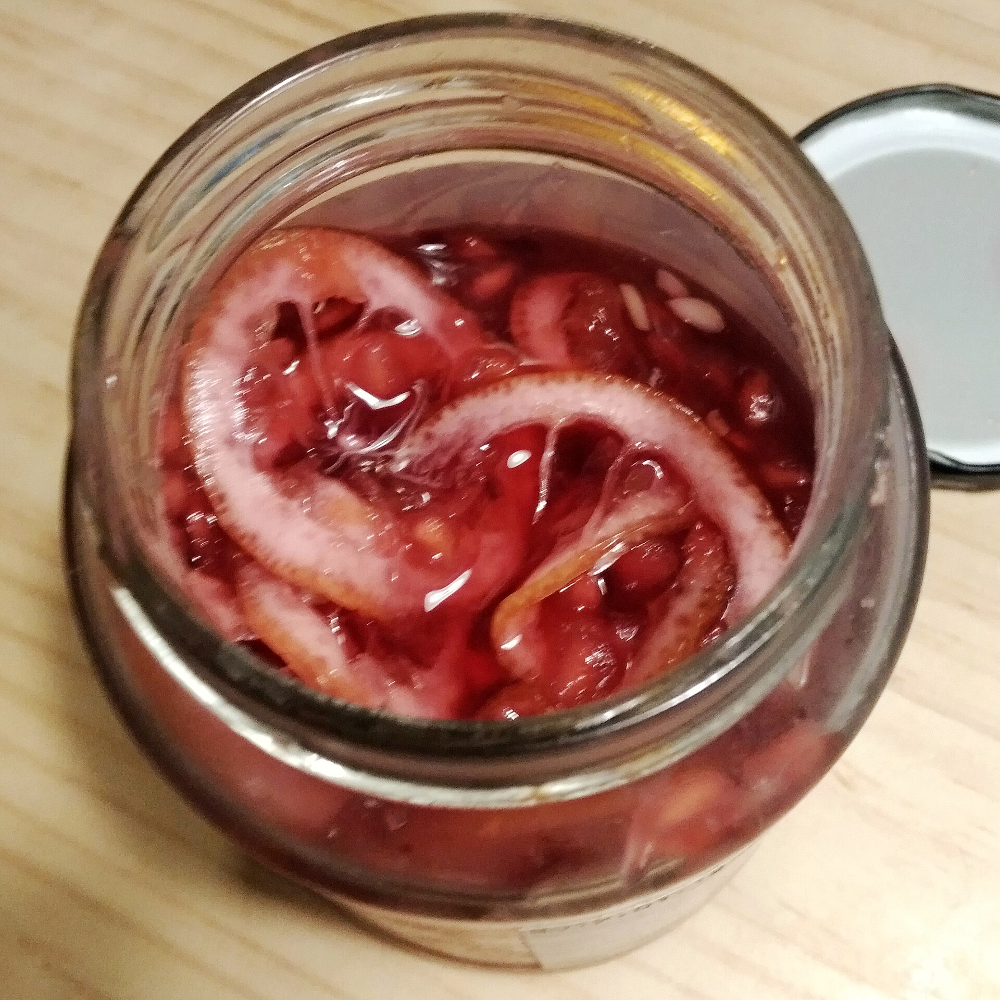

「企業經營。」
這是一個題目，不是一個看法。
和美高中・115-1 永續小食堂
2026.10.08 詳答怎麼寫・半線鹹酸甜
今天要做的事
PART 1
〈當執行長的一天〉：問題都答了，但好像少了什麼。
很多人的回答長這樣
這是一個題目，不是一個看法。
誰都能說的口號。怎麼平衡？誰付代價？
只有感受。為什麼緊張？緊張讓你做了什麼？
是寫長一點嗎？
詳答不是寫長
企業的社會責任。
我認為這個遊戲想讓我們看見：咖啡農被壓榨，不一定是因為有人很壞，而是競爭的規則逼著每一家公司往下壓價。我們一開始付公平價，但第二年期貨崩跌、對手降價，達成率掉到八成多，董事會發出警告；再堅持，執行長就會被換掉，新的執行長一樣會壓價。不過這不代表企業可以免責：法案表決，就是企業可以選擇改變規則的時刻。所以問題的關鍵不是換一個更善良的執行長，而是改變大家都要遵守的規則。
主張與收束理由與證據另一面
法國高中畢業會考・哲學
2021 年的考題：「我們要為未來負責嗎？」
一行字的答案，連你自己都不知道想清楚了沒有。寫出「為什麼」和「但是」，常常會發現自己的漏洞。
咖啡農的處境、永續、食物的未來，沒有一句話的標準答案。一行字裝不下「一方面……另一方面……」。
在民主社會裡，說服別人靠的不是音量，而是讓人看得懂、可以檢驗的理由。
改寫任務
對照「詳答寫作指引」的檢核表，交件前自己檢查一次。
PART 2
今天一半的組做鹽漬，一半的組做糖漬。同一顆檸檬，兩種命運。
今天想請你注意兩件事
食物真的就是很生活、很親近自己身體的一件事。
用手、用鼻子
我們熟悉或不熟悉的很多「風味」，都是過去的人試著保存、珍惜食物的過程中，被創造出來的。
風味是遺產


靜置於陰涼處一個禮拜。輕微搖晃使溶液均勻。一個禮拜後可置入冰箱。
檸檬一定要淹在液體下面。露出來的地方會長黴。
陰涼處放一到兩天，每天輕搖或倒置，讓糖溶化；糖大致溶化後冷藏，約一週可喝。
水是敵人。罐子、檸檬、刀都要乾。
| 時間 | 要記錄什麼 |
|---|---|
| 第 0 天（今天） | 顏色、氣味、液體多寡 |
| 第 1～2 天 | 鹽／糖溶了多少？有沒有氣泡？ |
| 第 7 天 | 果皮的軟硬、透明度；聞起來和第一天有什麼不同？ |
| 第 3～4 週 | 嚐一口，也去嚐另一組的 |
記錄越具體越好：「比較黃」不如「從亮黃色變成有點透明的淡黃色」。完整紀錄表在兩份講義的最後一節。
台語的蜜餞叫「鹹酸甜」
青梅先鹽漬成「鹽胚」放上幾個月，要用時漂水去鹽，再放進糖裡。